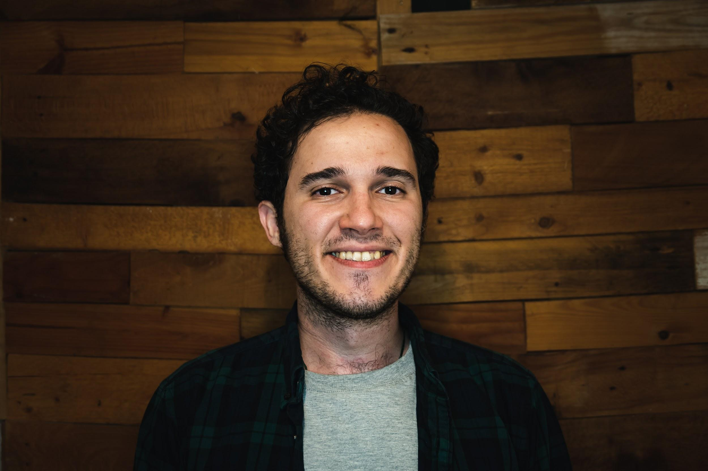

Sepehr Sharifzadeh
Sepehr Sharifzadeh is a curator, producer, and cultural advisor working across international performing arts. He develops artistic programmes, professional networks, and models for collaboration, particularly between artists and organisations working across different cultural and political contexts.
His work combines programming, production, touring, facilitation, and network-building. He also advises festivals and cultural institutions on inclusive programming, intercultural collaboration, and the development of diversity, equity, inclusion, and access initiatives.

Current & Upcoming
Hamel — YouYouGroup / newpolyphonies
- Presented at venues including deSingel and KVS, Belgium
Date of Performance — Maryam Khalili
- Premiered at Ballhaus Ost, March 2025
- Upcoming presentation at SummerWorks Festival 2026
The Chairs — Jaber Ramezan
- World Premiere at Festival d'Automne 2026, MC93, 24-25 October 2026
Focus
His ongoing areas of inquiry and structural work include:
- International cooperation
- Access to mobility, visibility, and professional networks
- Reciprocal exchange between independent artists and institutions
- Alternative models for touring and collective knowledge